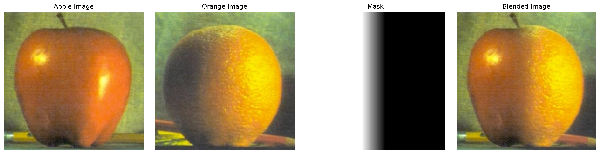

Finite Difference Operators are used to approximate the rate of
change of a function, like an image, at discrete points. These
operators estimate the derivatives of the function at these points.
By applying the finite difference operators Dx and Dy to an image,
we can calculate the gradients in the x and y directions,
respectively. These gradients represent the rate of intensity change
in the image along the horizontal and vertical axes. The overall
gradient magnitude at each pixel is then computed by combining the x
and y gradients using the following formula:
To generate an edge map, the gradient magnitudes are thresholded,
producing a binary image where edges are highlighted.
The first method involves applying a Gaussian filter directly to the
original image to create a smoothed version before calculating the
gradients. This is achieved by convolving the image with finite
difference operators D_x and D_y.
In the second method, the Gaussian filter is convolved with
D_x and D_y to create Difference of Gaussian
(DoG) filters, which are then applied to the original image to extract
edges.
After applying the Gaussian filter, you may notice a reduction in noise and a smoothing of edges. This is particularly useful in edge detection as it helps to emphasize significant changes in intensity.
The unsharp masking technique sharpens an image by enhancing its
high-frequency components, which are typically associated with edges and
fine details. This process begins with the original image, f,
and a blurred version of the image, f * g, created
using a Gaussian filter. To isolate the high-frequency details, the
blurred image is subtracted from the original, resulting in f -
f * g. These high frequencies are then amplified by a
factor α and added back to the original image
This operation can be consolidated into a single convolution known as
the unsharp mask filter, which effectively sharpens the image.
In the images, I applied both blurring and sharpening techniques. As you can see, the blurred images become progressively sharper as the alpha value increases, eventually returning to their original sharpness or even surpassing it, achieving a level of clarity better than the original.
I implemented hybrid images using the approach described in the SIGGRAPH 2006 paper by Oliva, Torralba, and Schyns. The goal was to combine the low-frequency components of one image with the high-frequency components of another, creating a hybrid image that changes in interpretation depending on the viewing distance. At a close range, the high-frequency details dominate, while at a greater distance, the low-frequency parts become more visible, resulting in a different perception of the image. For this I applied a low-pass filter (Gaussian blur) to the first image to retain only the low-frequency components. For the second image, I created a high-pass filter by subtracting the Gaussian-filtered image from the original, preserving only the high-frequency details. I then combined the two filtered images to form a hybrid image. I experimented with different cutoff frequencies to optimize the result.
I tried to align a cupcake to the child. However, the color differences between the two images are too significant, making it difficult to blend them effectively. As a result, the high-frequency image remains barely visible, even when I try to enhance it.
In the Gaussian stack, I progressively blurred the image at each level to capture increasingly smoothed versions of the original image. For the Laplacian pyramid, I subtracted each blurred image from the previous, less blurred version, which highlighted the fine details lost in the blurring process. This allowed me to decompose the image into different levels of detail without altering the image dimensions, retaining the original resolution throughout the process.
To blend images using Gaussian and Laplacian pyramids, I first decomposed both images into their respective Laplacian stack, capturing details at various levels of blur. At each level of the pyramid, I blended corresponding layers from the two images by weighting them according to the mask values. The blended result was created by combining the pyramid layers from the finest to the coarsest details. Finally, I reconstructed the final blended image by summing the levels of the blended Laplacian stack, ensuring a smooth, seamless transition between the two input images. This multi-scale blending preserved important details and avoided visible seams that might occur with simpler blending techniques.
